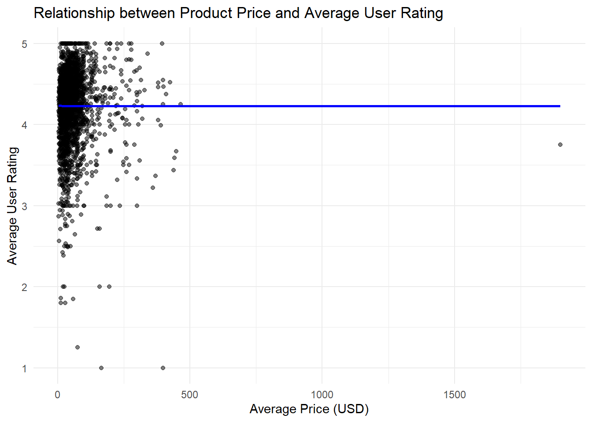
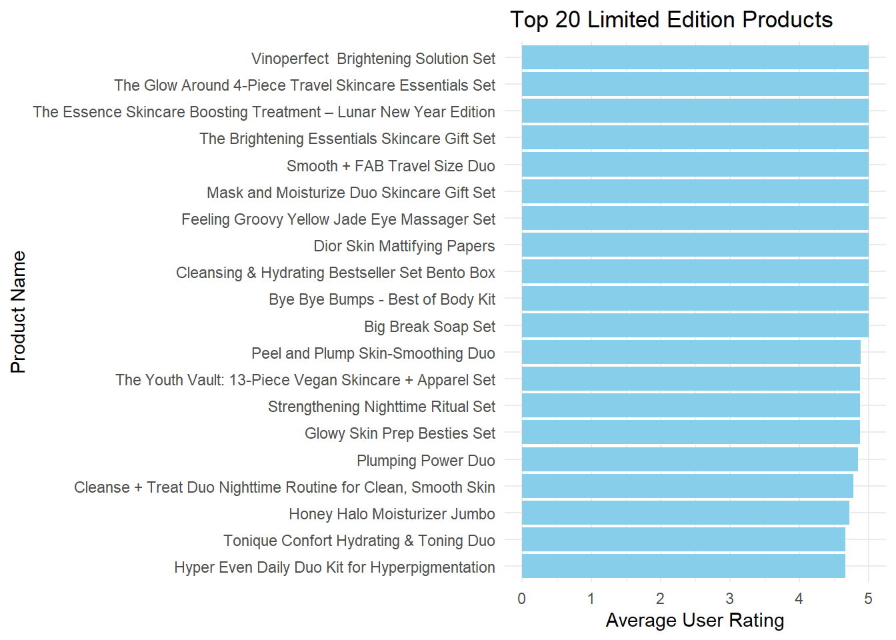
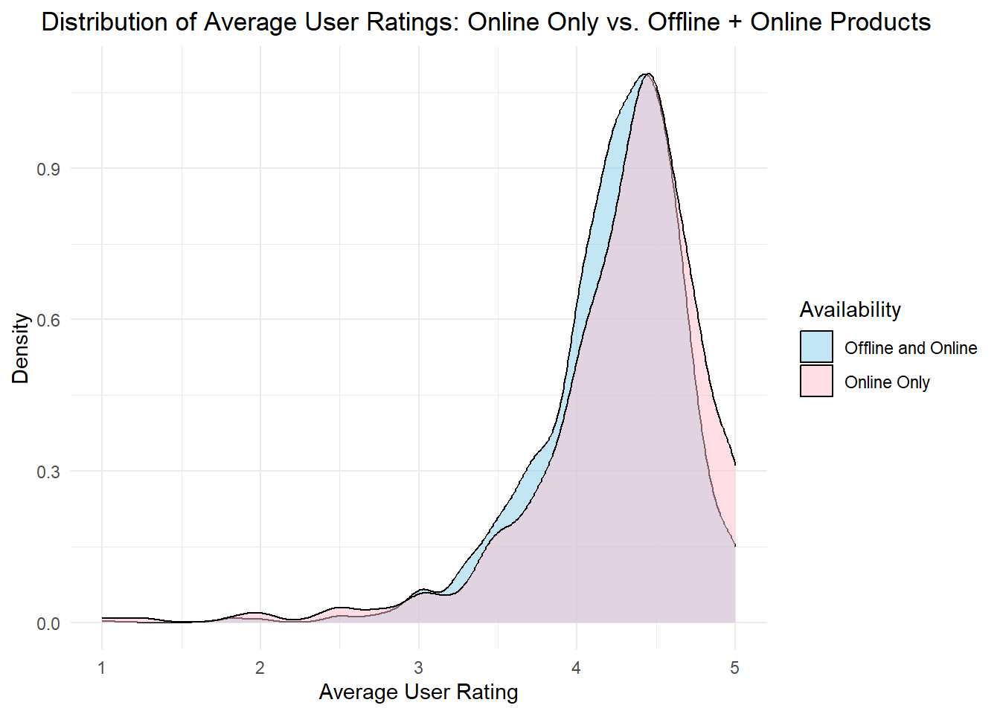

library(data.table)
product_info <- fread(
"C:/Users/Sakshi Chandak/OneDrive - nd.edu/Desktop/Courses/Fall'23/Data Wrangling/Final Proj/product_info.csv"
)
reviews_250 <- fread(
"C:/Users/Sakshi Chandak/OneDrive - nd.edu/Desktop/Courses/Fall'23/Data Wrangling/Final Proj/reviews_0-250.csv"
)
reviews_500 <- fread(
"C:/Users/Sakshi Chandak/OneDrive - nd.edu/Desktop/Courses/Fall'23/Data Wrangling/Final Proj/reviews_250-500.csv"
)
reviews_750 <- fread(
"C:/Users/Sakshi Chandak/OneDrive - nd.edu/Desktop/Courses/Fall'23/Data Wrangling/Final Proj/reviews_500-750.csv"
)
reviews_1250 <- fread(
"C:/Users/Sakshi Chandak/OneDrive - nd.edu/Desktop/Courses/Fall'23/Data Wrangling/Final Proj/reviews_750-1250.csv"
)
reviews_end <- fread(
"C:/Users/Sakshi Chandak/OneDrive - nd.edu/Desktop/Courses/Fall'23/Data Wrangling/Final Proj/reviews_1250-end.csv"
)Final Project- Sakshi Chandak
Reading Data
Merging Data
merged_250 <- merge(reviews_250, product_info, by = "product_id", all.x = TRUE)
merged_500 <- merge(reviews_500, product_info, by = "product_id", all.x = TRUE)
merged_750 <- merge(reviews_750, product_info, by = "product_id", all.x = TRUE)
merged_1250 <- merge(reviews_1250, product_info, by = "product_id", all.x = TRUE)
merged_end <- merge(reviews_end, product_info, by = "product_id", all.x = TRUE)
# Stack all merged datasets into a single data table
all_reviews_merged <- rbindlist(list(merged_250, merged_500, merged_750, merged_1250, merged_end), use.names = TRUE)Cleaning Data Table
# Removing "V1" column
all_reviews_merged[, V1 := NULL]
# Renaming certain columns
setnames(all_reviews_merged,
old = c("brand_name.x", "product_name.x", "price_usd.x", "rating.x", "rating.y"),
new = c("brand_name", "product_name", "price_usd", "author_rating", "avg_user_rating"))
# Deleting the extra columns
all_reviews_merged[, c("brand_name.y", "product_name.y", "price_usd.y") := NULL]Data Analysis
Q1. Which specific secondary and tertiary categories under the Skincare category have been favorited by users the most?
# Filter data for skincare category, then group by secondary category, summing up the 'loves_count', and finally order to find the most loved secondary category
most_loved_skincare_category <- all_reviews_merged[
primary_category == "Skincare",
.(total_loves = sum(loves_count, na.rm = TRUE)),
by = secondary_category
][order(-total_loves)][1]Warning in gsum(loves_count, na.rm = TRUE): The sum of an integer column for a
group was more than type 'integer' can hold so the result has been coerced to
'numeric' automatically for convenience.# View the result
most_loved_skincare_category secondary_category total_loves
1: Treatments 28118971765# Set secondary category of interest
target_secondary_category <- "Treatments" # Replace with the category of your interest
# Filter data for skincare category and the specified secondary category, then group by tertiary category, summing up the 'loves_count', and finally order to find the most loved tertiary category
most_loved_skincare_tertiary_category <- all_reviews_merged[
primary_category == "Skincare" & secondary_category == target_secondary_category,
.(total_loves = sum(loves_count, na.rm = TRUE)),
by = tertiary_category
][order(-total_loves)][1]Warning in gsum(loves_count, na.rm = TRUE): The sum of an integer column for a
group was more than type 'integer' can hold so the result has been coerced to
'numeric' automatically for convenience.# View the result
most_loved_skincare_tertiary_category tertiary_category total_loves
1: Face Serums 21544779311Q2. Is there a relationship between product price and average user rating?
# Getting average user rating and price for each product
product_price_rating <- all_reviews_merged[, .(avg_user_rating = mean(avg_user_rating, na.rm = TRUE), avg_price = mean(price_usd, na.rm = TRUE)), by = product_name]
# Scatter plot to observe relationship
library(ggplot2)
ggplot(product_price_rating, aes(x = avg_price, y = avg_user_rating)) +
geom_point(alpha = 0.5) +
geom_smooth(method = "lm", se = FALSE, color = "blue") + # Adding a trend line
labs(title = "Relationship between Product Price and Average User Rating",
x = "Average Price (USD)",
y = "Average User Rating") +
theme_minimal()`geom_smooth()` using formula = 'y ~ x'
Q3. Which products are limited edition and also have high average user ratings?
# Filter for limited edition products, calculate average user rating, and select the top 20 products
library(dplyr)
Attaching package: 'dplyr'The following objects are masked from 'package:data.table':
between, first, lastThe following objects are masked from 'package:stats':
filter, lagThe following objects are masked from 'package:base':
intersect, setdiff, setequal, uniontop_le_products <- all_reviews_merged %>%
filter(limited_edition == TRUE) %>%
group_by(product_name) %>%
summarise(avg_user_rating = mean(avg_user_rating, na.rm = TRUE)) %>%
arrange(desc(avg_user_rating)) %>%
head(20)
# Plot the top 20 limited edition products with highest average user rating
ggplot(top_le_products, aes(x = reorder(product_name, avg_user_rating), y = avg_user_rating)) +
geom_col(fill = "skyblue") +
coord_flip() + # Flips the x and y axes for better readability of product names
labs(title = "Top 20 Limited Edition Products",
x = "Product Name",
y = "Average User Rating") +
theme_minimal() +
scale_y_continuous(limits = c(0, 5)) +
theme(plot.title = element_text(hjust = 0.1))
Q5. How does the “online_only” status affect a product’s average rating?
# Calculate average user rating per product and merge with product info
avg_ratings <- all_reviews_merged %>%
group_by(product_name) %>%
summarise(avg_user_rating = mean(avg_user_rating, na.rm = TRUE))
prod_info <- all_reviews_merged %>%
select(product_name, online_only) %>%
distinct()
avg_ratings_with_info <- merge(avg_ratings, prod_info, by = "product_name")
# Density Plot Visualization
ggplot(avg_ratings_with_info, aes(x = avg_user_rating, fill = as.factor(online_only))) +
geom_density(alpha = 0.5) +
scale_fill_manual(values = c("skyblue", "pink"),
name = "Availability",
breaks = c("0", "1"),
labels = c("Offline and Online", "Online Only")) +
labs(title = "Distribution of Average User Ratings: Online Only vs. Offline + Online Products",
x = "Average User Rating",
y = "Density") +
theme_minimal() +
theme(plot.title = element_text(hjust = 0.15))